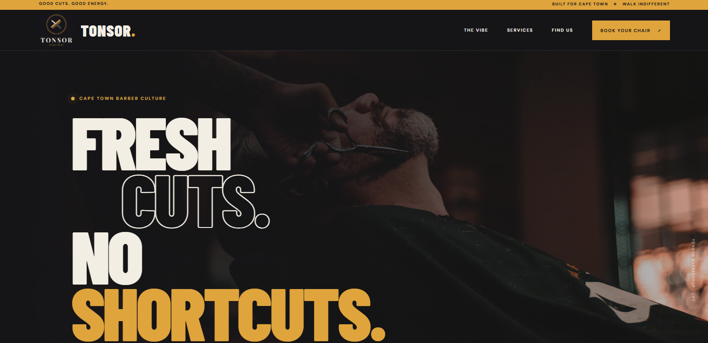

TONSOR — Barber & booking experience
A website concept for a modern barber brand, exploring how service information, visual design and a simple booking journey could come together.
PORTFOLIO CONCEPT · IN DEVELOPMENT01 / SELECTED WORK
A growing collection of website concepts, creative ideas and digital projects as we continue developing our work and exploring what's possible.

A website concept for a modern barber brand, exploring how service information, visual design and a simple booking journey could come together.
PORTFOLIO CONCEPT · IN DEVELOPMENTWe're still growing our portfolio and exploring new ideas. We'd love to work on something with you.
Work with us ↗HAVE A PROJECT IN MIND?